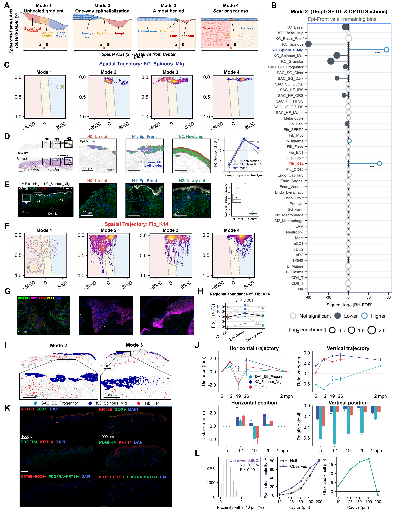

Spatial coordinates, enrichment, tissue localization and proximity between Fib_K14 and epithelial populations.
Executed supporting analyses and/or archived sources; see panel-specific status
Source data · Panel manifest · Execution report

| Panel | Description | Status |
|---|---|---|
| 5A | (A) Spatial coordinate definitions across repair modes. Horizontal origins correspond to the wound center in Mode 1, the epithelialization front in Modes 2 and 3, and the scar–scarless boundary in Mode 4. Relative tissue depth extends from the surface toward deeper tissue. | not_run |
| 5B | (B) Cell-state enrichment at the epithelialization front versus remaining bins in the displayed 19-dpb Mode 2 SPTDI and DPTDI sections. Signed −log10 Benjamini–Hochberg-adjusted values indicate enrichment direction and significance; dot size reflects absolute log2 enrichment. | not_run |
| 5C | (C) KC_Spinous_Mig spatial density distributions across repair modes, positioned relative to the mode-specific horizontal landmark and tissue depth. | not_run |
| 5D | (D) Wound overview, magnified unepithelialized/front/newly epithelialized regions, and regional KC_Spinous_Mig fractions in two 19-dpb sections with their displayed average. | not_run |
| 5E | (E) Multiplex staining for KRT6B (gray), MMP3 (green), SOX9 (red), and DAPI (blue), with a comparison between front and control regions. | not_run |
| 5F | (F) Fib_K14 spatial density distributions across Modes 1–4 using the corresponding spatial coordinate system. | not_run |
| 5G | (G) Multiplex imaging of PDGFRA (green), KRT14 (magenta), P63 (red), KLF4 (yellow), and DAPI (blue) in the wound-front region. Scale bar, 50 μm. | not_run |
| 5H | (H) Region-matched Fib_K14-associated abundance in unepithelialized tissue, the epithelialization front, and newly epithelialized tissue. The displayed comparison is annotated P < 0.001. | not_run |
| 5I | (I) Joint spatial maps of KC_Spinous_Mig (blue), Fib_K14 (red), and SAC_SG_Progenitor (cyan) in Modes 2 and 3. Overview scale bars, 1,000 μm; magnified-region scale bars, 500 μm. | not_run |
| 5J | (J) Horizontal-position and depth summaries for the indicated states at 5, 12, 19, and 26 dpb and 2 months post-healing (mph). | not_run |
| 5K | (K) Marker images for KRT6B/SOX9 and PDGFRA/KRT14, with marker-defined class masks depicting KRT6B/SOX9-positive profiles in red and PDGFRA/KRT14-positive profiles in green. DAPI is blue. Overview scale bar, 1,000 μm. | not_run |
| 5L | (L) Proximity analysis across distance thresholds. At 10 μm, the observed fraction is 3.80% versus 0.72% for the displayed null model, annotated P < 0.001. Radius-dependent comparisons extend to 200 μm. | not_run |